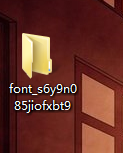

前端--字体&图标引进
一．字体引进---css 引进字体
@font-face {
font-family: "tuya";
src: url('./font/涂鸦.ttf');
}
*{
font-size:44px;
font-family: 'tuya';
}
二.字体图标引进
***系统自带的icon https://unicode-table.com/cn/#geometric-shapes直接复制实体符即可显示图标。***
- 首先获取要使用字体的三种文件格式.EOT、.TTF或.OTF、.SVG，确保能在主流浏览器中都能正常显示该字体。
- .EOT，适用于Internet Explorer 4.0+
- .TTF或.OTF，适用于Firefox 3.5、Safari、Opera
- .SVG，适用于Chrome、IPhone
-
在阿里巴巴字体图标库中下载自己需要的字体图标，先注册登录，然后选中你需要的所有图标加入购物车，（http://www.iconfont.cn/search/index）；
注意：一次性下载自己需要的所有图标，如果分批次下载的话，需要重复上面的步骤。
点击右上角购物车标志进入购物车下载
当下载完后有一个压缩包，解压得到文件夹，可以重命名为icon

-
在HTML文件中的使用方法：图标也是字体一类，把整个icon文件夹放到你项目中的font文件夹中
-
下面前两种方法在index.html页面中引入iconfont.css，在iconfont.css文件中的iconfont这个类中可以通过设置font-size来控制图标的大小，以及设置color来控制图标的颜色。
<link rel="stylesheet" href="font/icon/iconfont.css" />
注：查看类名或unicode编码，可以通过iconfont.css或三个demo_.html中获取。
- 1 第一种使用方法：font-class引用
在标签中class引入类名iconfont，挑选相应图标并获取类名，并写到跟.iconfont 一起。
<h1 class="iconfont icon-gongjuxiang"></h1>
- 2 第二种方法：unicode引用
在标签中class引入类名iconfont，挑选相应图标并获取字体编码，应用于标签内容
<h1 class="iconfont">& # xe827;</h1> (实体符之间是没有空格的)
- 3 第三种方法：symbol引用：挑选相应图标并获取类名，应用于页面
这种用法其实是做了一个svg的集合，与另外两种相比具有如下特点：- 支持多色图标了，不再受单色限制。
- 通过一些技巧，支持像字体那样，通过font-size,color来调整样式。
在当前文件中的icon这个类中可以通过设置font-size来控制图标的大小，以及设置color来控制图标的颜色。
.icon { width: 5em; height: 5em; color:orangered; vertical-align: -0.15em; fill: currentColor; overflow: hidden; } <script src="font/icon/iconfont.js"></script> <svg class="icon" aria-hidden="true"> <use xlink:href="#icon-hunningtujiaobanji"></use> </svg>
- 1 第一种使用方法：font-class引用
------->>本·文·完